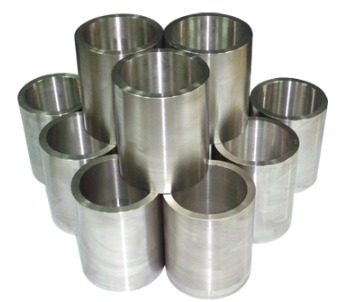
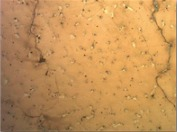
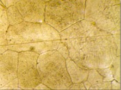
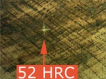
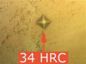

Inicio / Bujes centrifugados
Bujes centrifugados
Agher nace para prestar servicios de mecanizado computarizado a Aguayo Hermanos (Naguilan). Crea una planta para especializarse en fundición centrifugada y mecanizado en máquinas de CNC a fin de surtir el mercado nacional de repuestos que hasta el momento no se fabricaban mediante esta técnica en el país. Desde el año 2010 comenzó con el desarrollo de bujes de acero manganeso centrifugados, logrando crear un sistema de buje-pasador capaz de alcanzar 25 millones de toneladas de material procesado por kit.
Los bujes obtenidos por este proceso son compactos y muy resistentes al desgaste. La alta velocidad de enfriamiento con que se fabrican estos bujes restringe la formación de carburos en los bordes de grano, lo que permite, mediante un adecuado tratamiento térmico, obtener un material libre de estos carburos, que son causantes de grietas y reducen la vida útil de los aceros manganeso.
Servicios Mecanizados Agher tiene la capacidad de fabricar piezas centrifugadas de aceros especiales, acero inoxidable y bronce.




